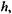
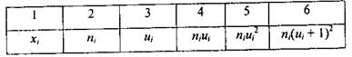
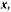
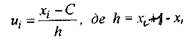
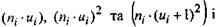
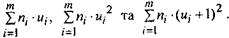
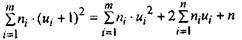

Більш зручним методом для фактичного розрахунку дисперсії та середньоквадратичного відхилення вибірки є метод добутків.
Можна застосувати цей метод, якщо різниця між двома послідовними варіантами дорівнює одному і тому ж числу  яке називають кроком вибіркової сукупності.
Розрахункова таблиця для методу добутків має вигляд:

Алгоритм методу добутків
1. У перші два стовпчики таблиці записують рівновіддалені варіанти
 вибірки, розміщуючи їх у зростаючому порядку та відповідні
частоти л, варіант.
2. Знаходимо моду - значення варіанти вибірки з найбільшою частотою, позначаємо С і вважаємо її умовним нулем. Змінні
 (12)
3. Обчислюємо добутки: знаходимо

Для контролю.
 (13)